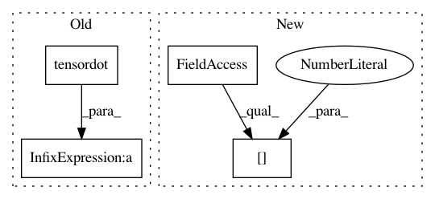

ce2884f0a7dc26087a5225bc92e39643920e3e16,GPy/kern/linear.py,linear,dpsi2_dmuS,#linear#Any#Any#Any#Any#Any#Any#,169
Before Change
AZZA = self.ZA.T[:, None, :, None] * self.ZA[None, :, None, :]
AZZA = AZZA + AZZA.swapaxes(1, 2)
target_S += (dL_dpsi2[:, :, :, None] * self.ZA[None, :, None, :] * self.ZA[None, None, :, :]).sum(1).sum(1)
dpsi2_dmu = (dL_dpsi2[:, :, :, None] * np.tensordot(mu, AZZA, (-1, 0))).sum(1).sum(1)
target_mu += dpsi2_dmu
def dpsi2_dZ(self, dL_dpsi2, Z, mu, S, target):
After Change
"extra_compile_args": ["-fopenmp -O3"], //-march=native"],
"extra_link_args" : ["-lgomp"]}
N,M,Q = mu.shape[0],Z.shape[0],mu.shape[1]
weave.inline(code, support_code=support_code, libraries=["gomp"],
arg_names=["N","M","Q","mu","AZZA","AZZA_2","target_mu","target_S","dL_dpsi2"],
type_converters=weave.converters.blitz,**weave_options)
In pattern: SUPERPATTERN
Frequency: 4
Non-data size: 4
Instances
Project Name: SheffieldML/GPy
Commit Name: ce2884f0a7dc26087a5225bc92e39643920e3e16
Time: 2013-05-07
Author: james.hensman@gmail.com
File Name: GPy/kern/linear.py
Class Name: linear
Method Name: dpsi2_dmuS
Project Name: SheffieldML/GPy
Commit Name: a24853da6b5c1201184fb60265c0b08b7d77e3cd
Time: 2015-04-28
Author: ibinbei@gmail.com
File Name: GPy/core/sparse_gp.py
Class Name: SparseGP
Method Name: _raw_predict
Project Name: keras-team/keras
Commit Name: cfbaec60c77448e6249f912d4b4d4a8c079f2bcf
Time: 2016-07-16
Author: farizrahman4u@gmail.com
File Name: keras/engine/topology.py
Class Name: Merge
Method Name: get_output_shape_for
Project Name: keras-team/keras
Commit Name: 73e563ecaf915d073d8b8fabc4a568ecddb0ea11
Time: 2016-02-25
Author: farizrahman4u@gmail.com
File Name: keras/layers/core.py
Class Name: TimeDistributedDense
Method Name: get_output